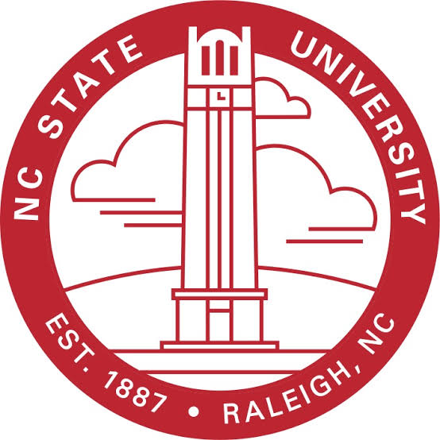
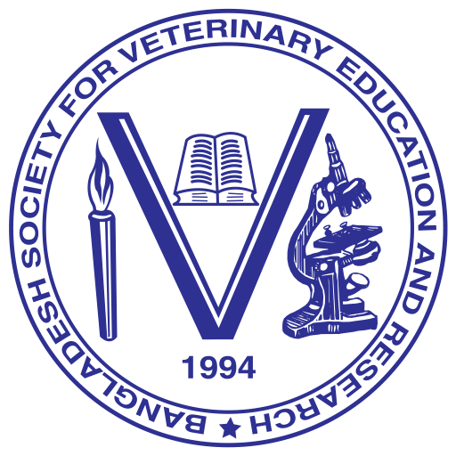

Best Poster, 1st Place
Cloud Computing Education in Data Science, Genomics and Health Symposium · 2026
PhD Researcher in Bioscience
Department of Biology · North Carolina A&T State University
PhD Researcher in Bioscience
Department of Biology
North Carolina A&T State University
I am a bioscience researcher interested in understanding tumor–virus interactions, antiviral resistance, and the development of improved oncolytic virus-based cancer immunotherapies. My research experience also includes antimicrobial resistance and molecular microbiology.
Academic institutions and research connections across my scientific journey.


Selected achievements and milestones throughout my academic journey.
Cloud Computing Education in Data Science, Genomics and Health Symposium · 2026

31st BSVER · 2025

7th International Scientific Conference on Food Safety and Health · 2025

National Technical Seminar on Food Safety and Health · 2025

31st International Poultry Seminar · 2025

National Technical Seminar on Food Safety and Health · 2025

Bangladesh · 2024

Badhan, Bangladesh Agricultural University · 2023
Exploring biological mechanisms and developing approaches to address important health challenges.
Investigating glioblastoma biology, cancer stem-like cells, tumor heterogeneity, and the immunosuppressive tumor microenvironment.
Understanding tumor antiviral responses and exploring engineered oncolytic viruses for improved cancer immunotherapy.
Studying antimicrobial resistance, bacterial virulence, molecular epidemiology, and the dissemination of resistant pathogens.
I welcome opportunities for scientific discussion, academic networking, and research collaboration. Feel free to get in touch.
Contact Me →